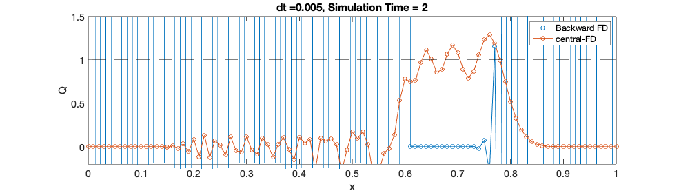

explicit linear advection code 1-D
x = linspace(0,1,101); % create a computational grid between 0 and 1 with 100 grid points % alternatively you can do this: dx = 0.01; x = 0:dx:100 dx = x(2)-x(1); Ni = length(x); u0 = -0.1; % advection speed; sigma = 0.1; Q = exp(-(x-0.5).^2/sigma^2); % initial profile of Q Q = x*0; Q(abs(x-0.5)<0.1)=1; Q_init = Q; % save the initial profile for the final plot % impose boundary conditions here - periodic Q(1) = Q(Ni-1); Q(Ni) = Q(2); dt = 0.005; % FIXME: time step should follow wave propagation Time = 0; % keep track on the time step figure('position',[442 668 988 280]) % create a blank figure to show the advection results count = 1; tt = 0; mm = 0; Qc = Q; for n=1:500 % the time stepping loop - let's try advect 200 steps maximum % plot the Q profile as a function of x if(mod(n,5)==1) % only plot every 5 steps plot(x,Q,'-o'); hold on plot(x,Qc,'-o'); hold on plot(x,x*0+1,'k--'); % Q_ana = x*0; % Q_ana(abs(x+u0*Time-0.5)<=0.11)=1; % plot(x,Q_ana,'r-'); hold off legend('Backward FD','central-FD') xlabel('x'),ylabel('Q'),title(['dt =',num2str(dt),', Simulation Time = ',num2str(Time)]); set(gca,'fontsize',14); % make the font better for visualization ylim([-0.2 1.5]) pause(0.1) % tt(count) = Time; % mm(count) = max(Q); % save figure str = sprintf('%0*d',4,count); image_fn = ['~/Data/solver/png/lec2-',str]; disp(image_fn); saveas(gcf,image_fn,'png'); count = count+1; end Time = Time + dt; % the current time for i=2:Ni-1 % index stops at Ni-1 because we need i+1 Q(i) = Q(i) + u0*dt/dx.*(Q(i+1)-Q(i)); % our first forward-difference scheme! end for i=2:Ni-1 % index stops at Ni-1 because we need i+1 Qc(i) = Qc(i) + u0*dt/(2*dx).*(Qc(i+1)-Qc(i-1)); % central-difference scheme! end % This is called a periodic boundary condition Q(1) = Q(Ni-1); Q(Ni) = Q(2); % % diagnostics % if(mod(n,5)==0) % only store max Q every 5 steps % % tt(count) = Time; % mm(count) = max(Q); % count = count+1; % % end if(Time > 2) break; % stop the time-loop if simulation time reaches 1 end end
~/Data/solver/png/lec2-0001 ~/Data/solver/png/lec2-0002 ~/Data/solver/png/lec2-0003 ~/Data/solver/png/lec2-0004 ~/Data/solver/png/lec2-0005 ~/Data/solver/png/lec2-0006 ~/Data/solver/png/lec2-0007 ~/Data/solver/png/lec2-0008 ~/Data/solver/png/lec2-0009 ~/Data/solver/png/lec2-0010 ~/Data/solver/png/lec2-0011 ~/Data/solver/png/lec2-0012 ~/Data/solver/png/lec2-0013 ~/Data/solver/png/lec2-0014 ~/Data/solver/png/lec2-0015 ~/Data/solver/png/lec2-0016 ~/Data/solver/png/lec2-0017 ~/Data/solver/png/lec2-0018 ~/Data/solver/png/lec2-0019 ~/Data/solver/png/lec2-0020 ~/Data/solver/png/lec2-0021 ~/Data/solver/png/lec2-0022 ~/Data/solver/png/lec2-0023 ~/Data/solver/png/lec2-0024 ~/Data/solver/png/lec2-0025 ~/Data/solver/png/lec2-0026 ~/Data/solver/png/lec2-0027 ~/Data/solver/png/lec2-0028 ~/Data/solver/png/lec2-0029 ~/Data/solver/png/lec2-0030 ~/Data/solver/png/lec2-0031 ~/Data/solver/png/lec2-0032 ~/Data/solver/png/lec2-0033 ~/Data/solver/png/lec2-0034 ~/Data/solver/png/lec2-0035 ~/Data/solver/png/lec2-0036 ~/Data/solver/png/lec2-0037 ~/Data/solver/png/lec2-0038 ~/Data/solver/png/lec2-0039 ~/Data/solver/png/lec2-0040 ~/Data/solver/png/lec2-0041 ~/Data/solver/png/lec2-0042 ~/Data/solver/png/lec2-0043 ~/Data/solver/png/lec2-0044 ~/Data/solver/png/lec2-0045 ~/Data/solver/png/lec2-0046 ~/Data/solver/png/lec2-0047 ~/Data/solver/png/lec2-0048 ~/Data/solver/png/lec2-0049 ~/Data/solver/png/lec2-0050 ~/Data/solver/png/lec2-0051 ~/Data/solver/png/lec2-0052 ~/Data/solver/png/lec2-0053 ~/Data/solver/png/lec2-0054 ~/Data/solver/png/lec2-0055 ~/Data/solver/png/lec2-0056 ~/Data/solver/png/lec2-0057 ~/Data/solver/png/lec2-0058 ~/Data/solver/png/lec2-0059 ~/Data/solver/png/lec2-0060 ~/Data/solver/png/lec2-0061 ~/Data/solver/png/lec2-0062 ~/Data/solver/png/lec2-0063 ~/Data/solver/png/lec2-0064 ~/Data/solver/png/lec2-0065 ~/Data/solver/png/lec2-0066 ~/Data/solver/png/lec2-0067 ~/Data/solver/png/lec2-0068 ~/Data/solver/png/lec2-0069 ~/Data/solver/png/lec2-0070 ~/Data/solver/png/lec2-0071 ~/Data/solver/png/lec2-0072 ~/Data/solver/png/lec2-0073 ~/Data/solver/png/lec2-0074 ~/Data/solver/png/lec2-0075 ~/Data/solver/png/lec2-0076 ~/Data/solver/png/lec2-0077 ~/Data/solver/png/lec2-0078 ~/Data/solver/png/lec2-0079 ~/Data/solver/png/lec2-0080 ~/Data/solver/png/lec2-0081
% plot the initial and final profiles of Q figure('position',[442 668 988 280]) % create a blank figure to show the advection results plot(x,Q_init,'-ro'); hold on plot(x,Q,'-bo') Q_ana = x*0; Q_ana(abs(x-0.3)<0.1)=1; % plot(x,Q_ana,'--b') xlabel('x') ylabel('Q') ylim([-0.1 1.2]) set(gca,'fontsize',14)
% plot the initial and final profiles of Q figure('position',[442 668 988 280],'color','w') % create a blank figure to show the advection results plot(x,Q_init,'-ro'); hold on plot(x,Q,'-bo') xlabel('x') ylabel('Q') ylim([-0.1 1.2]) set(gca,'fontsize',14) legend('Advected Q','Initial Q')